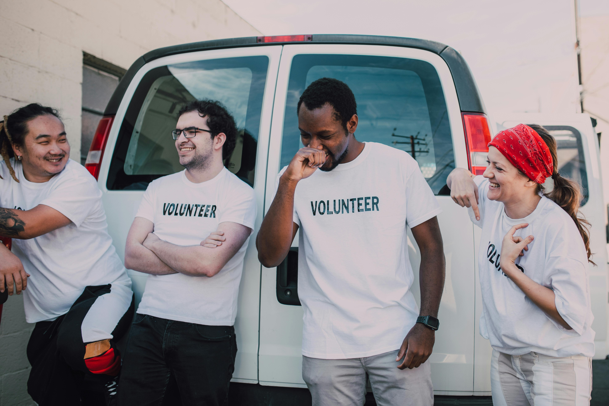

About CRIZ
Hope begins with shelter

Our Mission
At CRIZ, our mission is to ensure that every individual and family has access to safe, stable, and affordable housing. We work to break the cycle of housing insecurity by connecting people with resources, advocating for equitable housing policies, and building partnerships that create sustainable solutions. Our goal is simple yet urgent: to make housing a human right, not a privilege.
Our Story
Our organization began with a small group of volunteers who saw firsthand how unstable housing can uproot lives and limit opportunities. What started as a neighborhood initiative—helping families cover rent and navigate complex housing systems—grew into a movement to address the root causes of homelessness and insecurity. Each success story we’ve witnessed has reinforced our belief that with compassion, advocacy, and action, lasting change is possible.
Our Vision
We envision a future where no one has to wonder where they’ll sleep at night. In our communities, housing will serve as a foundation for dignity, health, and opportunity—not as a barrier to them. By building stronger networks of support and challenging systems that perpetuate inequality, we aim to create a world where safe and stable homes are accessible to all, regardless of income or circumstance.
Our Values

We believe every person deserves a safe place to sleep, a key to dignity, and a community that shows up. We center the voices of people with lived experience, meet immediate needs with compassion, and work for long-term solutions so everyone can build a stable home and a hopeful future.